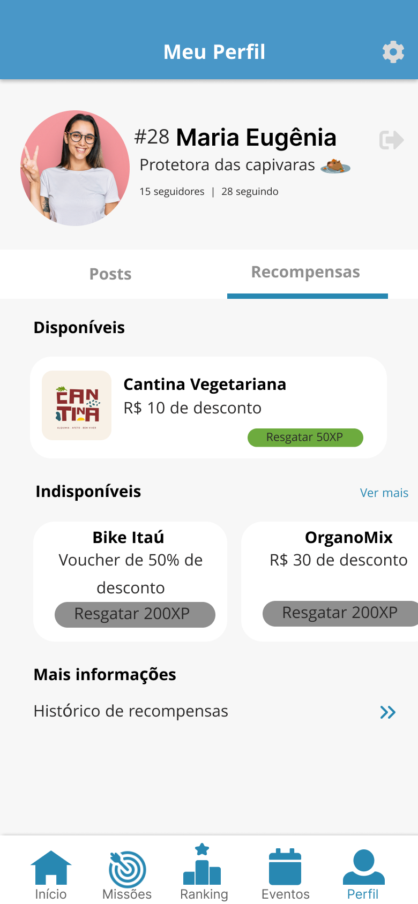

Reco é um aplicativo criado por nós voltado para a sustentabilidade da cidade do Recife, onde você disputa com seus amigos e é
premiado de acordo com suas atividades sustentáveis.

Importancia das atividades sustentaveis
As atividades sustentáveis são de extrema importância para promover a preservação do meio ambiente, garantir a equidade social e assegurar o desenvolvimento
econômico a longo prazo. A sustentabilidade busca atender às necessidades atuais sem comprometer a capacidade das gerações futuras de atenderem às suas próprias
necessidades. Entre os benefícios das atividades sustentáveis estão a conservação dos recursos naturais, a redução da poluição, a promoção da justiça social,
o estímulo à inovação e a criação de sistemas econômicos mais resilientes. Adotar práticas sustentáveis é essencial para enfrentar desafios ambientais,
como mudanças climáticas, escassez de recursos e perda de biodiversidade, contribuindo para a construção de um futuro mais equilibrado e saudável para o
planeta e suas comunidades.